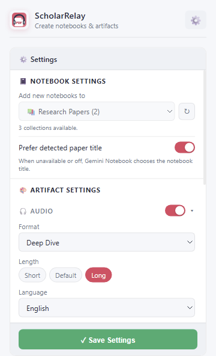

Compact controls
Choose exactly what Gemini Notebook creates
Notebook organization, artifact options, and experience preferences stay clear and compact.
Collection and paper-title preferences
Audio, video, reports, visuals, and study tools
Notifications, chime, and automatic opening